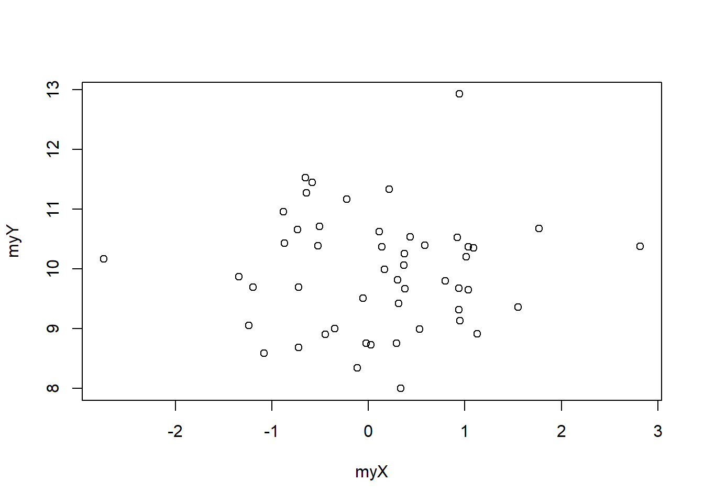
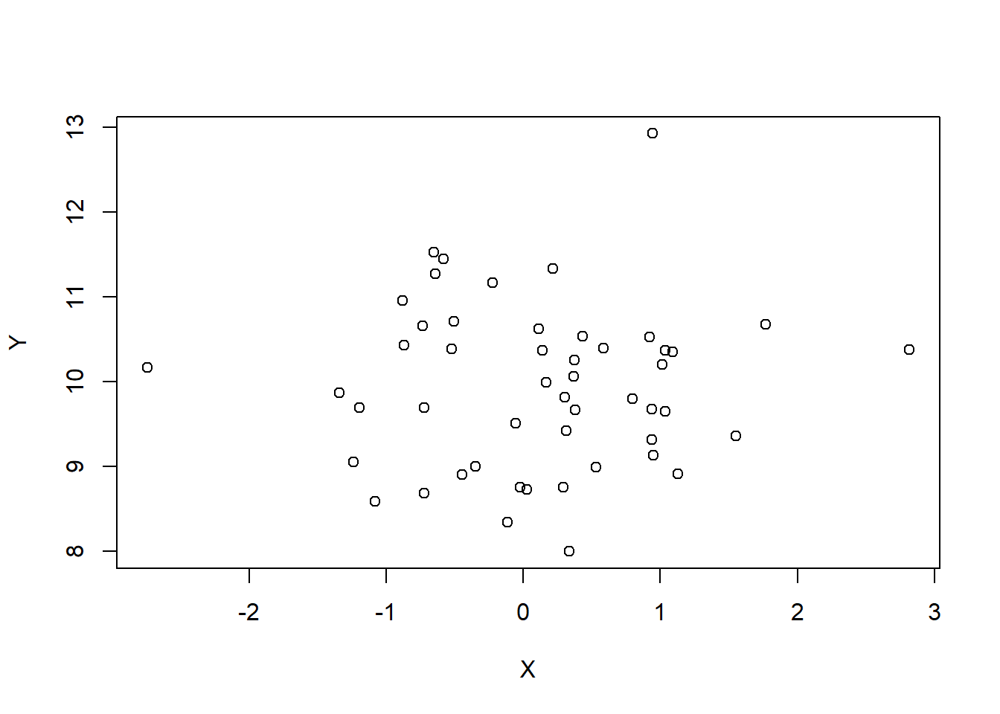
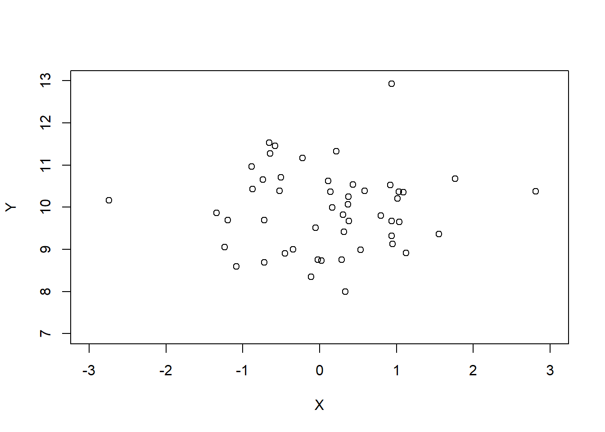

11 Gráficos simples
11.1 plot
El primer tipo de gráfico que veremos es la nube de puntos. En un diagrama de dispersión, cada punto está representado por su valor en x e y. La función para hacer un diagrama de dispersión es plot().
myX <- rnorm(50, mean = 0, sd = 1)
myY <- rnorm(50, mean = 10, sd = 1)
plot(x = myX, y = myY)
Al igual que con todos los tipos de gráficos, podemos agregar una leyenda en los ejes x e y.
plot(x = myX, y = myY,
xlab = "X", ylab = "Y")
También podemos definir los límites de los ejes X e Y.
plot(x = myX, y = myY,
xlab = "X", ylab = "Y",
xlim = c(-3, 3), ylim = c(7, 13))
El tipo de punto se puede establecer con el argumento pch que puede tomar un carácter o un número del 1 al 25.
plot(x = rep(seq(1:5), 5), y = rep(seq(1:5), each = 5),
pch = 1:25)
plot(x = myX, y = myY,
pch = c("a", "@", "#", "1", "=", "-", "_", "o", "O", "0", letters[1:15]))
El tamaño de los puntos se puede definir con el argumento cex.
plot(x = myX, y = myY,
cex = seq(from = 0.5, to = 3, length.out = 50))
El color de los puntos se puede definir con el argumento col. Volveremos a los colores en un próximo capítulo.
myX <- rnorm(100, mean = 0, sd = 1)
myY <- rnorm(100, mean = 10, sd = 1)
plot(x = myX, y = myY,
cex = seq(from = 0.5, to = 3, length.out = 100),
pch = 16,
col = sample(colors(), 100))
Para representar nuestros puntos, el color y el tamaño de los puntos pueden representar información adicional. Aquí representaremos por un gradiente de tamaño la variable myY y por un gradiente de color la variablemyX.
myX <- rnorm(100)
myY <- rnorm(100)
dfGraph <- data.frame(myX, myY)
dfGraph <- dfGraph[order(dfGraph$myX),]
dfGraph$myCol <- colorRampPalette(c("blue", "red"))(100)
dfGraph <- dfGraph[order(dfGraph$myY),]
dfGraph$myCex <- seq(from = 0.5, to = 3, length.out = 100)
plot(x = dfGraph$myX, y = dfGraph$myY,
cex = dfGraph$myCex, pch = 16, col = dfGraph$myCol,
xlab = "", ylab = "")R ofrece la posibilidad de conectar puntos de nube de puntos de diferentes maneras. Las diferentes opciones están disponibles en la ayuda de las funciones plot() y plot.default().
myX <- 1:20
myY <- rnorm(20, mean = 10, sd = 1)
plot(x = myX, y = myY,
type = 'b') # 'p', 'l', 'b', 'c', 'o', 'h', 's', 'S', 'n'
Una última opción muy útil es el argumento panel.first que permite realizar una operación gráfica en una capa debajo de nuestro gráfico. Aquí hay un ejemplo ilustrativo con una cuadrícula hecha con y sin panel.first. La cuadrícula se realiza gracias a la función grid(). Para poner los gráficos lado a lado usaremos mfrow.
par(mfrow = c(1, 2))
plot(x = myX, y = myY,
type = 'b', pch = 16, cex = 3)
grid(lwd = 3, lty = 1)
plot(x = myX, y = myY,
type = 'b', pch = 16, cex = 3,
panel.first = grid(lwd = 3, lty = 1)) 
par(mfrow = c(1, 1))La función par() proporciona acceso a parámetros gráficos. Entre estos parámetros hay mfrow que permite dividir el espacio gráfico como una matriz. mfrow toma como argumentos un vector numérico de tamaño 2: el primer elemento corresponde al número de líneas y el segundo elemento al número de columnas. El parámetro mar controla los márgenes en la parte inferior, izquierda, superior y derecha, respectivamente, utilizando un vector digital de tamaño 4. Después de cambiar la configuración de gráficos predeterminada, se recomienda restablecerlos para que no afecte a los futuros gráficos. Los valores predeterminados para mfrow son c(1, 1) y mar = c (4, 4, 4, 4). Podemos restablecer estos valores predeterminados como antes, redefiniendo cada parámetro. También podemos guardar los valores actuales (en un objeto op) de antemano, modificarlos para los propósitos de nuestros gráficos y luego recuperar los valores contenidos en el objeto op. Aquí usamos lapply para hacer rápidamente cuatro gráficos.
op <- par(no.readonly = TRUE)
par(mfrow = c(2, 2), mar = c(2, 2, 1, 1))
graph4 <- lapply(1:4, function(i){
plot(x = rnorm(100),
y = rnorm(100),
col = i, pch = 16)
})
par(op)Es útil incluir líneas verticales u horizontales para representar valores particulares. Estas líneas se pueden agregar con la función abline().
myX <- rnorm(100)
myY <- rnorm(100)
plot(x = myX, y = myY,
xlim = c(-4, 4), ylim = c(-4, 4),
pch = 16, cex = 1.5,
col = sample(colors(), size = 100),
panel.first = {
grid()
abline(v = c(min(myX), max(myX)), lty = 2)
abline(h = c(min(myY), max(myY)), lty = 2)
abline(v = mean(myX), lty = 1)
abline(h = mean(myY), lty = 1)
})
11.2 hist
Para hacer un histograma usamos la función hist(). Esta es una función gráfica útil para visualizar rápidamente la distribución de un conjunto de datos.
op <- par(no.readonly = TRUE)
par(mfrow = c(2, 2), mar = c(2, 2, 1, 1))
myX <- list(
rnorm(1000),
rgamma(1000, shape = 1),
sample(1:100, size = 1000, replace = TRUE),
rbeta(1000, shape1 = 1, shape2 = 2)
)
myTitle <- c("Normal", "Gamma", "Uniform", "Beta")
tr <- lapply(1:4, function(i){
hist(myX[[i]],
col = heat.colors(15),
main = myTitle[i]
)
})
par(op)11.3 barplot
El gráfico de barras se realiza utilizando la función barplot().
myX <- c(4, 5, 8)
barplot(myX, names.arg = c("A", "B", "C"))
Cuando el objeto enviado a esta función es un vector, entonces la función barplot() devuelve un gráfico de barras simple. Cuando es un matrix entonces las barras son múltiples.
op <- par(no.readonly = TRUE)
par(mfrow = c(1, 2), mar = c(2, 2, 1, 1))
myX <- matrix(c(4, 5, 8, 4, 6, 2), nrow = 2)
barplot(myX, names.arg = c("A", "B", "C"))
myX <- matrix(c(4, 5, 8, 4, 6, 2, 3, 4, 5), nrow = 3)
barplot(myX, names.arg = c("A", "B", "C"))
par(op)La función barplot() también se puede usar para representar el equivalente de un histograma. Esto puede ser útil para representar la distribución de una variable en función del eje x el eje y. En el siguiente ejemplo tenemos n puntos tomados aleatoriamente en una distribución normal con la configuración mean = 0 y sd = 1 (myX <- rnorm(n)). Estos puntos son para ser mostrado en azul o en rojo (el color azul se codifica con el valor 4 y el color rojo con el valor 2, discutiremos en un capítulo posterior). La eleccion aleatoria del color se realiza con la función sample() (myCol <- sample(c(4, 2), size = n, replace = TRUE)). Aquí queremos representar una nube de puntos con puntos rojos o azules, y histogramas de los ejes X y Y para ver la distribución de puntos (con un degradado de color de azul a rojo dependiendo La proporción de puntos de color en cada categoría con un degradado de color con 100 valores entre azul y rojo ; Mycolors <- colorRampPalette (c("azul", "rojo"))(100)).
Para hacer el histograma, cortaremos los datos con la función cut(), especificando que queremos que las separaciones se realicen entre -4 y 4 en pasos de 1 (myYCut <- cut(myY, breaks = -4:4)). Para contar el número de puntos en cada categoría y para cada color, solo usamos la función table() (myYCutCol <- table(myCol, myYCut)). En esta tabla, la primera línea corresponde al primer color encontrado en el conjunto de datos y la segunda línea al otro color. Es por eso que necesitamos cambiar el dibujo aleatorio de los colores para que la primera línea siempre corresponda a azul y la segunda línea a rojo: myCol <- c(2, sample(c(4, 2), size = (n - 1), replace = TRUE)).
Luego podemos calcular la proporción de rojo dividiendo la primera línea por la suma de las dos líneas que representaremos en porcentaje multiplicando por 100: myXCutCol[1,] / (myXCutCol[1,] + myXCutCol[2,]) * 100. Para que este número coincida con un color, solo mantendremos su parte entera con la función round(). Si el porcentaje es cero o si el resultado no es posible debido a una división por cero, debemos reemplazarlo con 1 para que corresponda a un color en nuestro gradiente que va de 1 a 100 (xCol[is.na(xCol) | xCol == 0] <- 1).
Todo lo que nos queda es organizar el espacio gráfico con la función layout() que toma como argumento una matriz cuyos valores y su posición corresponderán al diseño de los diferentes gráficos que queremos lograr. El gráfico 1 corresponde al gráfico de barras superior, el gráfico 2 a la nube de puntos y el gráfico 3 al gráfico de barras derecho.
n <- 50
myX <- rnorm(n)
myY <- rnorm(n)
myCol <- c(2, sample(c(4, 2), size = (n - 1), replace = TRUE))
myColors <- colorRampPalette(c("blue", "red"))(100)
myYCut <- cut(myY, breaks = -4:4)
myXCut <- cut(myX, breaks = -4:4)
myYCutCol <- table(myCol, myYCut)
myXCutCol <- table(myCol, myXCut)
xCol <- round(
myXCutCol[1,] / (myXCutCol[1,] + myXCutCol[2,]) * 100
)
xCol[is.na(xCol) | xCol == 0] <- 1
yCol <- round(
myYCutCol[1,] / (myYCutCol[1,] + myYCutCol[2,]) * 100
)
yCol[is.na(yCol) | yCol == 0] <- 1
op <- par(no.readonly = TRUE)
par(mar = c(2, 3, 1, 1))
layout(matrix(c(1, 1, 0,
2, 2, 3,
2, 2, 3), ncol = 3, byrow = TRUE))
barplot(table(myXCut), las = 1, col = myColors[xCol])
plot(x = myX, y = myY, col = myCol, pch = 16,
xlim = c(-4, 4), ylim = c(-4, 4), cex = 1.5,
panel.first = grid())
barplot(table(myYCut), las = 1, horiz = TRUE, col = myColors[yCol])par(op)Luego podemos integrar este script en una función para, por ejemplo, estudiar el efecto de la variable n.
graphBarplotCol <- function(n){
myX <- rnorm(n)
myY <- rnorm(n)
myCol <- c(2, sample(c(4, 2), size = (n - 1), replace = TRUE))
myColors <- colorRampPalette(c("blue", "red"))(100)
myYCut <- cut(myY, breaks = -4:4)
myXCut <- cut(myX, breaks = -4:4)
myYCutCol <- table(myCol, myYCut)
myXCutCol <- table(myCol, myXCut)
xCol <- round(
myXCutCol[1,] / (myXCutCol[1,] + myXCutCol[2,]) * 100
)
xCol[is.na(xCol) | xCol == 0] <- 1
yCol <- round(
myYCutCol[1,] / (myYCutCol[1,] + myYCutCol[2,]) * 100
)
yCol[is.na(yCol) | yCol == 0] <- 1
op <- par(no.readonly = TRUE)
par(mar = c(2, 3, 1, 1))
layout(matrix(c(1, 1, 0,
2, 2, 3,
2, 2, 3), ncol = 3, byrow = TRUE))
barplot(table(myXCut), las = 1, col = myColors[xCol])
plot(x = myX, y = myY, col = myCol, pch = 16,
xlim = c(-4, 4), ylim = c(-4, 4), cex = 1.5,
panel.first = grid())
barplot(table(myYCut), las = 1, horiz = TRUE, col = myColors[yCol])
par(op)
}
graphBarplotCol(n = 1000)
Por supuesto, un barplot puede tomar valores positivos o negativos.
barplot(rnorm(20), horiz = TRUE, col = rainbow(20))
El barplot también se puede usar para hacer una pirámide de edades (hay funciones para realizar las las pirámides de edades, aquí el objetivo es educativo).
gender <- data.frame(
m = cut(sample(1:75, 1000, replace = TRUE),
breaks = seq(from = 0, to = 80, by = 10)),
f = cut(sample(1:75, 1000, replace = TRUE),
breaks = seq(from = 0, to = 80, by = 10))
)
op <- par(no.readonly = TRUE)
par(mfrow = c(1, 2), mar = c(2, 1, 2, 1))
barplot(-table(gender$f), horiz = TRUE, col = "salmon")
barplot(table(gender$m), horiz = TRUE, col = "lightblue")
par(op)11.4 boxplot
Los diagramas de caja son gráficos muy comunes con R porque ofrecen una buena vista de un conjunto de datos al representar los valores extremos (valores atípicos), la mediana, los cuartiles, los mínimos y los máximos.
La función boxplot() se aplica a uno o más vector.
df <- data.frame(
box1 = rnorm(1000),
box2 = rgamma(1000, shape = 1),
box3 = sample(-3:3, size = 1000, replace = TRUE),
box4 = rbeta(1000, shape1 = 1, shape2 = 2)
)
boxplot(df, col = c(rgb(0, 94, 255, maxColorValue = 255),
rgb(255, 0, 174, maxColorValue = 255),
rgb(255, 136, 0, maxColorValue = 255),
rgb(119, 255, 0, maxColorValue = 255)))
Si una variable es de tipo factor, la función boxplot() facilita la representación de cada categoría. También funciona con variables numéricas, pero se debe tener cuidado de no tener demasiados valores diferentes para que el gráfico permanezca legible.
df$cat <- sample(c("w", "x", "y", "z"), size = 1000, replace = TRUE)
boxplot(df$box3 ~ df$cat, col = c(rgb(0, 94, 255, maxColorValue = 255),
rgb(255, 0, 174, maxColorValue = 255),
rgb(255, 136, 0, maxColorValue = 255),
rgb(119, 255, 0, maxColorValue = 255)), ylab = "Box3")
df$cat2 <- sample(1:3, size = 1000, replace = TRUE)
boxplot(df$box4 ~ df$cat*df$cat2, col = c(
rgb(0, 94, 255, maxColorValue = 255),
rgb(255, 0, 174, maxColorValue = 255),
rgb(255, 136, 0, maxColorValue = 255),
rgb(119, 255, 0, maxColorValue = 255)), ylab = "Box4")El boxplot puede representarse horizontal o verticalmente.
df$cat <- sample(c("w", "x", "y", "z"), size = 1000, replace = TRUE)
boxplot(df$box2 ~ df$cat, horizontal = TRUE,
col = c(rgb(255, 110, 0, maxColorValue = 255),
rgb(230, 255, 0, maxColorValue = 255),
rgb(0, 178, 255, maxColorValue = 255),
rgb(166, 0, 255, maxColorValue = 255)), xlab = "Box2")
11.5 Otros gráficos
Hay muchos otros gráficos, pero los que acabamos de ver son la base. Para obtener más información e ideas para representar sus datos, podemos consultar el hermoso sitio https://www.data-to-viz.com/ o la galería gráfica R https://www.r-graph-gallery.com/ (la mayoría de los gráficos se realizan con el paquete ggplot2 que veremos más adelante). Para obtener más ideas, también podemos usar la demostración del paquete graphics usando el comando demo('graphics') (la tecla “Enter” se usa para mostrar los gráficos).
11.6 Conclusión
Felicitaciones, hemos llegado al final de este capítulo sobre gráficos simples. Ahora sabemos cómo hacer que los gráficos principales plot(), hist(), barplot(), y boxplot(). A lo largo de este capítulo, hemos utilizado diferentes colores y diferentes formas de representar los colores: es hora de formalizar el uso y la gestión de los colores. ¡Este es el tema del próximo capítulo!